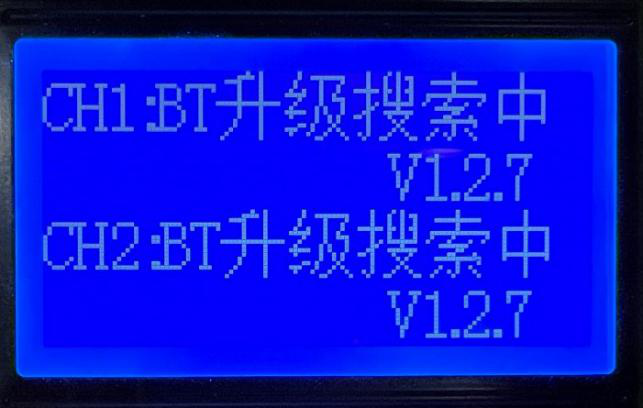
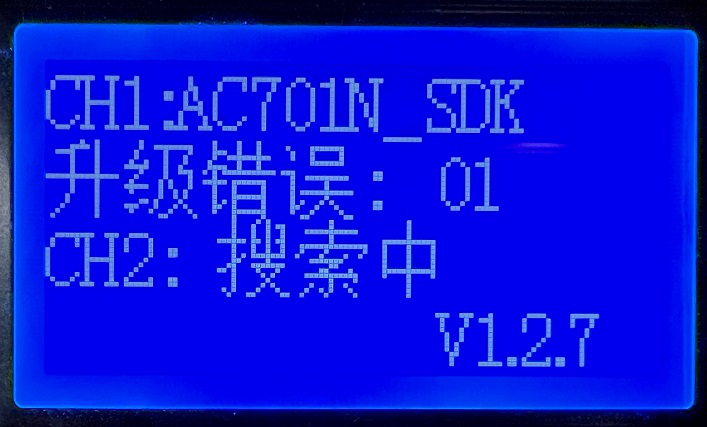
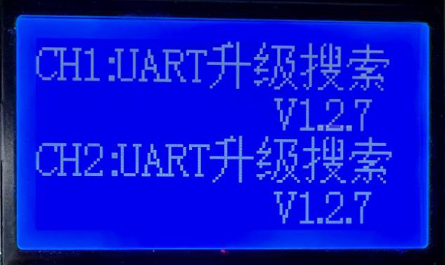
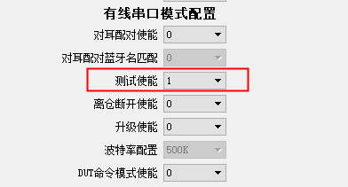
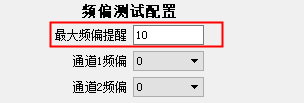
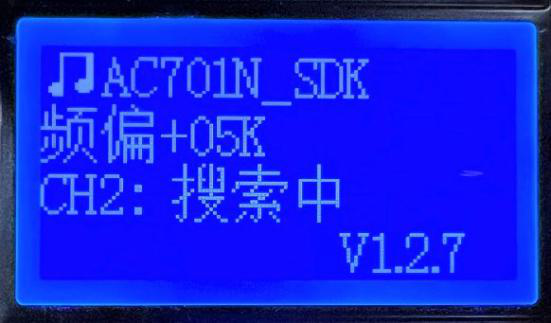
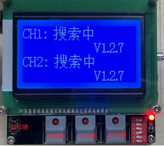

3.7. Test Box Batch Upgrade and Test Cases
3.7.1. Batch wireless upgrade of Bluetooth devices
3.7.1.1. Feature overview
Jieli Bluetooth earphone, speaker, watch and other solutions can all be upgraded wirelessly in batches with the test box.
Supports simultaneous upgrade on two channels
Supports connection by fixed device name, to prevent non-target devices from being upgraded by mistake
Supports connection by matching only the device name prefix, so that each device's name can have a different MAC address suffix
Supports standalone upgrade (just copy the upgrade file to a TF card and insert it into the test box to upgrade offline)
3.7.1.2. Operation
Test box PC tool settings
[1] Connect the test box to the PC and press and hold the rightmost button on the test box to enter PC configuration mode; the test box shows "LOADING";

[2] On the "Function settings" (功能设置) page of the PC tool, configure "Wireless discovery configuration" (无线发现配置): set the name of the target devices to upgrade and whether to match only the prefix;
[3] Click "Save settings to test box" (保存设置到测试盒);

Test box DIP switch settings
With DIP switch 6 of the test box in the "OFF" position (the other DIP switch positions do not matter), the test box is in classic Bluetooth mode; use this position to upgrade Bluetooth devices such as earphones and speakers.
With DIP switch 6 in the "ON" position, the test box is in BLE mode (DIP switch 1 must be OFF, i.e. it connects to BLE slaves); use this position to upgrade devices such as BLE data transfer devices.
Note
After changing the DIP switches or the PC tool configuration, restart the test box for the new configuration to take effect
Procedure
[1] Insert a TF card containing the upgrade file (such as *.bfu or *.ufw) into the TF card slot on the left side of the test box. When the screen shows "BT upgrade searching" (BT升级搜索中), the box has entered wireless search and upgrade mode.

[2] After a device is connected, the corresponding channel of the test box shows the device name and the upgrade progress.

Note
For chips from the AC693x series onward, wireless upgrade (both classic Bluetooth and BLE) has two stages, "Preparing" (准备中) and "Upgrading" (升级中), whereas earlier chips such as AC692x have only the "Upgrading" (升级中) stage.
If Bluetooth is interrupted or power is lost during the "Preparing" (准备中) stage, the device can still be found under its original Bluetooth name and upgraded.
If the upgrade is interrupted during the "Upgrading" (升级中) stage, the test box automatically searches for the device name xxx_update to reconnect and continue the upgrade.
[3] When the "Upgrading" (升级中) progress reaches 100%, the upgrade has succeeded. The device resets and shows the corresponding upgrade-success UI (such as a double-beep prompt tone or a specific LED flash pattern), and powers off after the UI indication ends, so that the test box does not reconnect to it and upgrade it again.

[4] If an error occurs during the upgrade, the corresponding error code is shown; look up the error code definitions in the table for a preliminary diagnosis

[5] After one device has been upgraded, the test box automatically connects to other nearby devices with the same name and upgrades them; a device only needs to be powered on and discoverable by the test box for the upgrade to start automatically.
Note
1. In BLE mode, the upgrade disconnects and reconnects once when switching from the "Preparing" (准备中) state to the "Upgrading" (升级中) state; this is not an abnormal disconnection. Classic Bluetooth does not need to reconnect at this stage.
2. On a real production line, there may be powered-on devices with the same name that are not the target devices to upgrade, so it is recommended to perform wireless upgrades in a shielded room whenever possible to avoid upgrading other devices with the same name by mistake.
3.7.2. Batch wired upgrade of Bluetooth devices
3.7.2.1. Feature overview
Jieli Bluetooth earphone, speaker, watch and other solutions can all be upgraded in batches over a wired UART connection with the test box.
Supports simultaneous upgrade on two channels
Wired one-to-one upgrade, with no risk of connecting to a device with the same name by mistake
Supports standalone upgrade (just copy the upgrade file to a TF card and insert it into the test box to upgrade offline)
Supports an adjustable UART baud rate for upgrades
3.7.2.2. Operation
Test box PC tool settings
[1] Connect the test box to the PC and press and hold the rightmost button on the test box to enter PC configuration mode; the test box shows "LOADING";
[2] On the "Function settings" (功能设置) page of the PC tool, configure "Wired UART mode configuration" (有线串口模式配置): set "Upgrade enable" (升级使能) to "1", select the baud rate (default: 500K) and click "Save settings to test box" (保存设置到测试盒);
Test box DIP switch settings
This mode does not depend on the test box DIP switch settings.
Procedure
[1] Insert a TF card containing the upgrade file (such as *.bfu or *.ufw) into the TF card slot on the left side of the test box. When the screen shows "UART upgrade search" (UART升级搜索), the box has entered wired upgrade mode.

[2] Place the device to be upgraded in the UART fixture; the wired upgrade starts and the current upgrade progress is shown.
[3] If an error occurs during the upgrade, the corresponding error code is shown; look up the error code definitions in the table for a preliminary diagnosis.
[4] After the upgrade, take the earphone out of the fixture and put in a new device to be upgraded.
3.7.3. Batch testing of classic Bluetooth devices
3.7.3.1. Feature overview
Jieli Bluetooth earphone, speaker and other classic Bluetooth solutions can all be tested wirelessly in batches with the test box.
Supports simultaneous testing on two channels
Supports connection by fixed device name, to prevent non-target devices from being upgraded by mistake
Supports connection by matching only the device name prefix, so that each device's name can have a different MAC address suffix
Supports fast connection over a wired UART
Supports running the frequency offset calibration + music playback + button + call tests in sequence
3.7.3.2. Operation
Test box PC tool settings
Scenario 1: the device connects wirelessly
[1] Connect the test box to the PC and press and hold the rightmost button on the test box to enter PC configuration mode; the test box shows "LOADING";
[2] On the "Function settings" (功能设置) page of the PC tool, configure "Wireless discovery configuration" (无线发现配置): set the name of the target devices to upgrade and whether to match only the prefix;
[3] Click "Save settings to test box" (保存设置到测试盒);

Scenario 2: the device connects over a wired UART
[1] Connect the test box to the PC and press and hold the rightmost button on the test box to enter PC configuration mode; the test box shows "LOADING";
[2] On the "Function settings" (功能设置) page of the PC tool, configure Wired UART configuration (有线串口配置) and change "Test enable" (测试使能) to "1";
[3] Click "Save settings to test box" (保存设置到测试盒);

Test box DIP switch settings
DIP switch No. |
Test item |
ON/OFF |
Remarks |
|---|---|---|---|
1 |
Call test |
ON |
CVSD encoding |
2 |
Call test MIC loopback mode |
ON |
Device MIC -> Bluetooth transmission via the test box -> device DAC output; requires the call test to be enabled |
2 |
Call test mode with MIC sound output from the test box |
OFF |
Device MIC -> test box DAC output; requires the call test to be enabled |
– |
A2DP music playback |
ON |
No DIP switch needed; enabled by default |
4 |
Frequency offset test (频偏测试) |
ON |
|
5 |
Frequency offset calibration |
ON |
Requires the frequency offset test to be enabled |
Note
After changing the DIP switches or the PC tool configuration, restart the test box for the new configuration to take effect.
Test steps
[1] Establish the connection
Scenario 1: the device connects wirelessly Power on the device under test and bring it close to the test box. The test box initiates a Bluetooth connection as soon as it finds the target device; once connected, the test box shows the device name and frequency offset (if the frequency offset test is enabled).
Scenario 2: the device connects over a wired UART
Place the device under test in the UART fixture (see "Connecting the Test Box to a Fixture over UART"). The test box obtains the device information over UART and establishes the connection; once connected, the test box shows the device name and frequency offset (if the frequency offset test is enabled).
[2] Frequency offset test and calibration: when the frequency offset measured by the test box (the calibrated frequency offset, if calibration is enabled) exceeds the alarm value set in the PC tool (default: 10K), the test box sounds a triple-beep alarm to indicate an abnormal frequency offset.


[3] After showing the frequency offset, the test box automatically starts the music playback test, and the test box's built-in song can be heard from the speaker of the device under test. After confirming that the device's sound is normal, use the switch button on the test box to move on to the next test item.
The switch button for channel 1 is the left button
The switch button for channel 2 is the middle button
The right button disconnects the devices on both channel 1 and channel 2.

[4] During music playback, some button functions of the device under test can be recognized: button operations such as previous/next track and play/pause are shown on the test box LCD and the corresponding actions are executed. At this stage, you can check whether the button hardware and function definitions of the device under test are correct.

[5] If the DIP switches are set to enable "Call test", the call test starts after you switch to it. The sound picked up by the MIC of the device under test is transmitted to the test box, and depending on the DIP switch setting, the test box either plays it through its own speaker or sends it back to the device under test. At this stage, you can confirm whether the MIC and the Bluetooth eSCO link of the device under test work properly.

[6] When the call test is complete, press the switch button of the corresponding channel to disconnect Bluetooth and end the test of the current device. Wait for the next device to connect and repeat steps 1-4.
Note
Except for the AC690x and AC692x series, frequency offset calibration can by default be performed only once. To recalibrate, set BTIF_OPT=0 in the isd_config.ini file before the upgrade process, which erases the original Bluetooth configuration area; only then can the device be recalibrated.
3.7.4. Quick test method for TWS earphones in mass production
3.7.4.1. Feature overview
With Jieli TWS Bluetooth earphone solutions, the test box can quickly put the earphones into a special test mode in which, together with production test equipment, they can undergo RF, electroacoustic, air-tightness and other tests; the specific test items must be supported by the production test equipment. In the special test mode, the earphones are discoverable and connectable, with the TWS function and the reconnection function turned off, and they support RF testing, Bluetooth audio testing (A2DP, HFP), etc.
After testing, put the TWS earphones into their charging case; the earphones return to the normal state.

3.7.4.2. Operation
Test box PC tool settings
[1] Connect the test box to the PC and press and hold the rightmost button on the test box to enter PC configuration mode; the test box shows "LOADING";
[2] Open the PC tool and, under "Wired UART mode configuration" (有线串口模式配置), set "DUT command mode enable" (DUT命令模式使能) to 1.

Test box hardware setup
[1] DIP switch configuration: this mode does not depend on the DIP switch positions.
[2] Connect the UART port of the test box to the fixture; see "Connecting the Test Box to a Fixture over UART".
Procedure
[1] The TWS earphones enter the special test mode via the test box
[2] The TWS earphones enter the special test mode via the test box
[3] When testing is complete, put the earphones into a normal charging case to restore normal mode
3.7.5. Batch frequency offset calibration during programming
3.7.5.1. Using the calibration signal transmit mode
Version V1.2.5 adds the option for setting the calibration signal frequency point
Using the calibration signal transmit mode
Calibration signal transmit mode: V125 supports the calibration signal transmit mode. Used together with the 1-to-8 programming tool, this feature calibrates the Bluetooth frequency offset of the chips being programmed during programming, which eliminates the subsequent frequency calibration step.
To enter calibration signal transmit mode: after power-on, quickly press and hold the left function button until the LCD shows the "Calibration signal transmit mode" (校频波发射模式) screen; the test box is then in this mode.
To configure the calibration signal frequency point: by default, the calibration signal is transmitted on frequency point 1. To use a different frequency point, change it with the "Calibration signal frequency point configuration" (校频波频点配置) option in the PC tool (range: 0 to 9). The test box LCD shows this frequency point in calibration signal transmit mode.
Note
The transmit frequency point of the test box must match the frequency point configured in the 1-to-8 tool for calibration to work properly. When you change the frequency point, also change "Calibration signal frequency point setting" (校频波频点设置) in the 1-to-8 programmer PC tool accordingly.
3.7.5.2. Batch frequency offset calibration with the 1-to-8 programmer
The test box can be used with the 1-to-8 programmer for batch frequency offset calibration. For the detailed procedure, see "Frequency Offset Calibration".